BigSearch
Data Extraction as a Service
User Guide
DAFTAR ISI
DAFTAR ISI 1
BIGSEARCH 2
Operasional BigSearch 2
Login 2
Dashboard 3
Word Cloud 4
Media Analytics 5
News Discovery 6
Twitter Analytic 7
People Profile 8
Menu World Cloud 9
Filtering 9
Date Range and Process 10
Summary 10
Sentiment 11
Menu Media Analytics 11
Filtering 12
Date Range and Process 12
Summary 12
Menu News Discovery 13
Filtering 13
Date Range and Process 13
Summary 14
Menu Twitter Analytics 14
Filtering 15
Date Range and Process 15
Summary 15
Menu People Profile 16
Filtering 16
Account Social Media 16
Content Social Media 17
Account Digital Media 17
BIGSEARCH
Operasional BigSearch
Login
- Akses link/IP address http://172.30.101.63/
- Masukkan username dan password beserta captcha kemudian klik sign in.
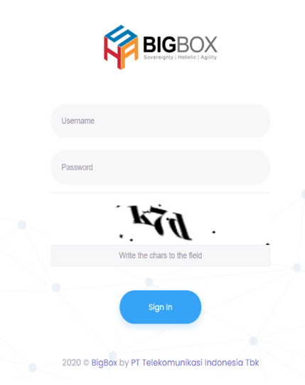
Pilih Menu Big Search
Dashboard
- Menu dashboard akan menampilkan summary dari data yang telah tersimpan pada data lake (BigLake), data social media dan digital media.
- Tampilan data social media.
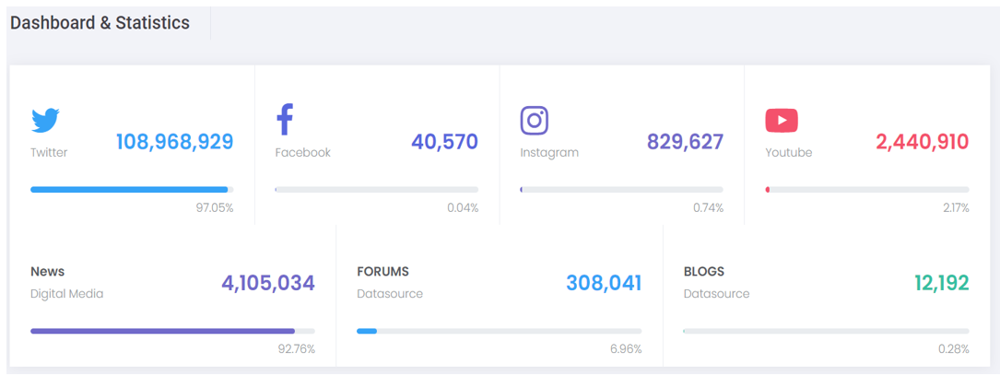
- Tampilan data digital media.
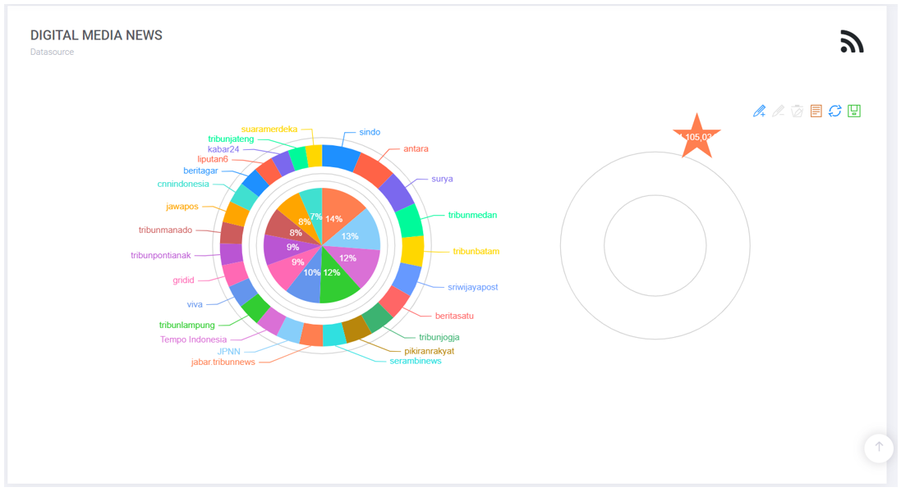
Word Cloud
Menu word cloud akan menampilkan trending topic dari social media dan digital media berdasarkan data yang telah disimpan ke dalam data lake (BigLake).
Berikut ini, tampilan pada menu word cloud :
- Filtering
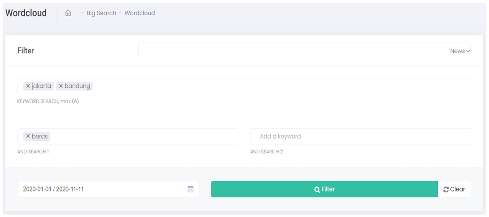
- Summary
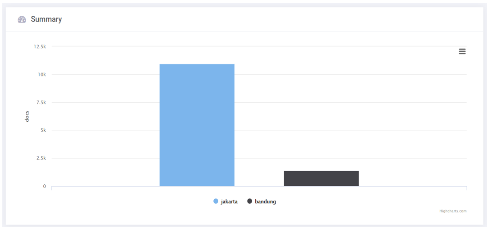
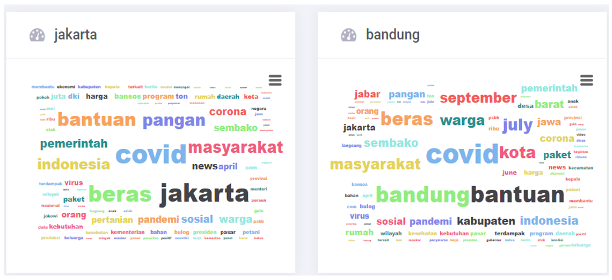
- Sentiment
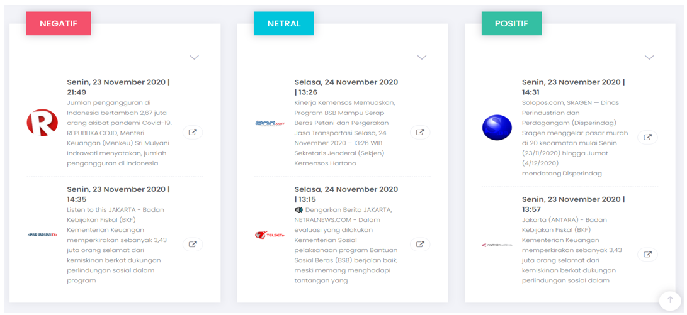
Media Analytics
Menu media analytics untuk mengkomparasi atau membandingkan banyaknya data yang ada pada data lake (BigLake) berdasarkan digital media.
Berikut ini, tampilan pada menu media analytics :
- Filtering
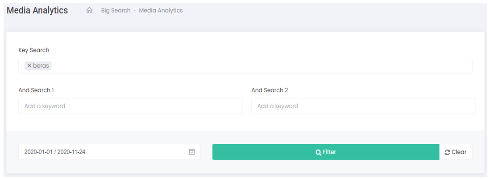
- Summary
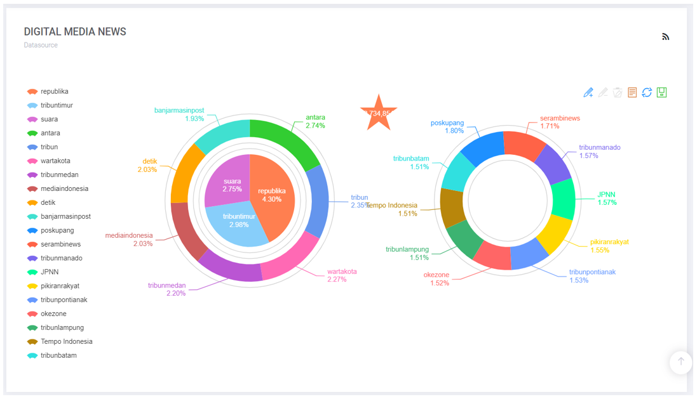
News Discovery
Menu news discovery, digunakan untuk mencari topik/berita pada digital media. Dari menu ini dapat melihat digital media mana saja yang paling sering menerbitkan berita terkait topik yang akan dicari.
Berikut ini, tampilan pada menu news discovery :
- Filtering
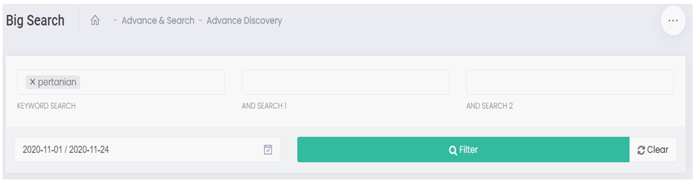
- Summary
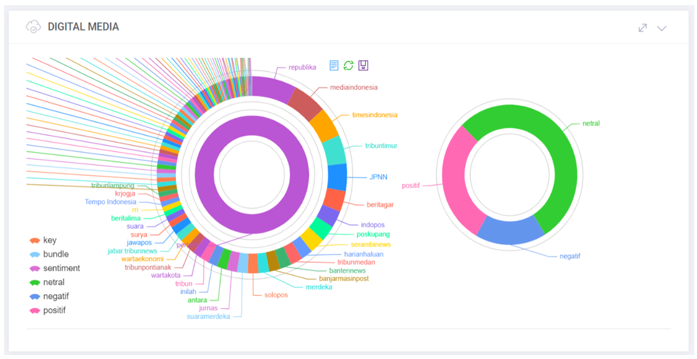
Twitter Analytic
Menu twitter analytic, digunakan untuk mencari topik/berita pada social media twitter. Dari menu ini dapat melihat user mana saja yang paling sering menyebutkan (mention) terkait topik yang akan dicari pada postingan.
Berikut ini, tampilan pada menu twitter analytic :
- Filtering
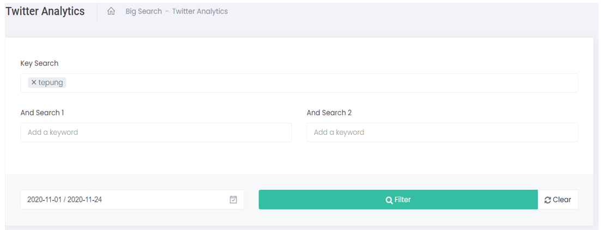
- Summary
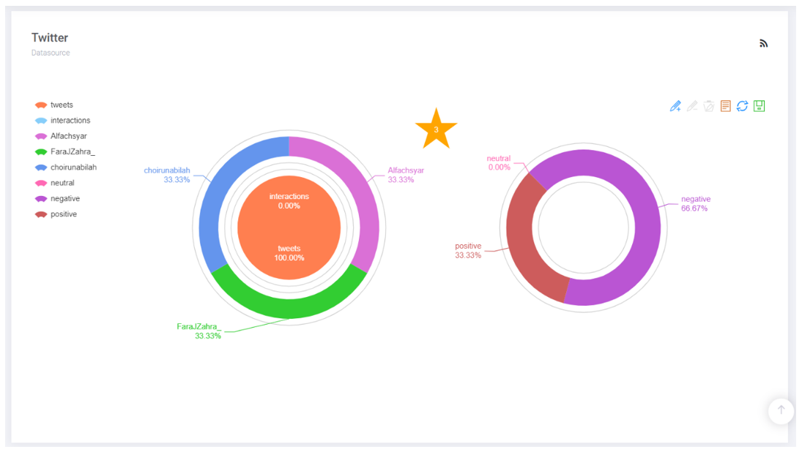
People Profile
Menu people profile, digunakan untuk mencari akun/profile dan content pada social media dan digital media, berdasarakan kata yang di input.
Berikut ini, tampilan pada menu people profile :
- Filtering
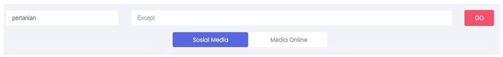
- Summary
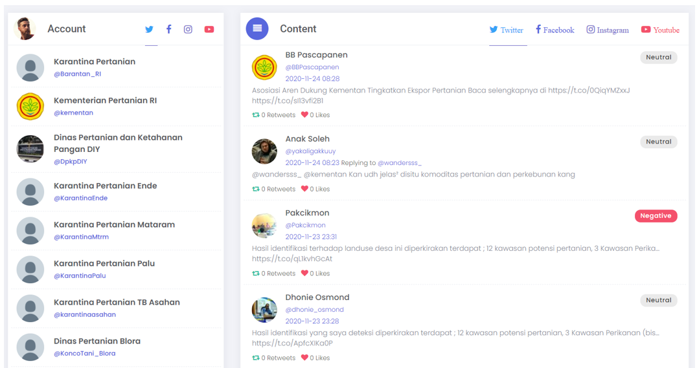
Menu World Cloud
Filtering
- Sebelum melakukan pengambilan data pada data lake (BigLake), langkah pertama yang harus dilakukan yaitu menentukan filtering terkait data yang akan diambil.
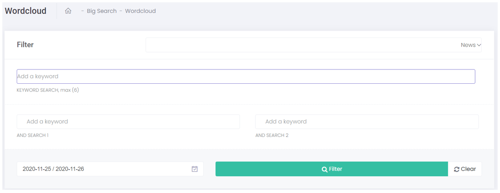
- Menentukan data yang akan diambil berdasarkan social media/digital media, dapat dilakukan dengan klik pilihan yang berada disisi kanan atas.
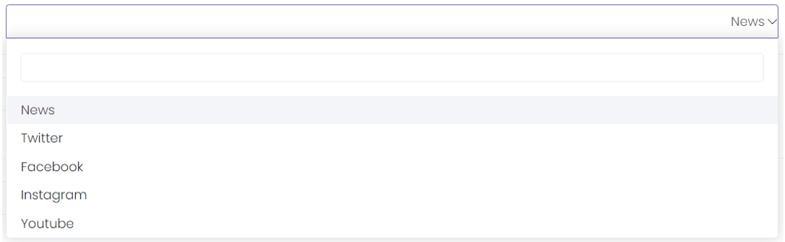
- Setelah menentukan social media/digital media, selanjutnya menentukan keyword berdasarkan daerah/persebaran keyword sesuai lokasi dimana keyword tersebut disebutkan (post/mention).
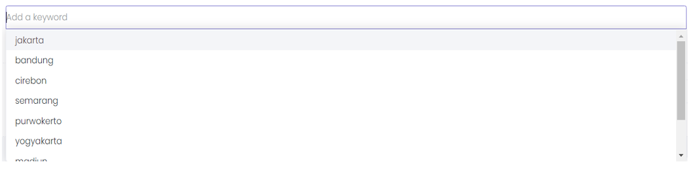
- Menentukan keyword caranya dengan mengisi form input add a keyword lalu diberi keterangan and search 1 dan and search 2. Perbedaan form input keyword yaitu memasukkan keyword ditiap form, berarti metode pembacaan keyword untuk pengambilan data tersebut ada penambahan parameter “dan” yang menandakan bahwa adanya suatu keharusan dalam pengambilan data. Sementara itu, dalam satu form input terdapat lebih dari satu keyword (multiple) yang di input menandakan bahwa metode pembacaan untuk pengambilan data “atau”. Berikut ini, contoh untuk pengisian form dibawah ini menjadi suatu keharusan dalam pengambilan data terkait keyword beras dan jagung yang berada di daerah Jakarta atau Bandung.
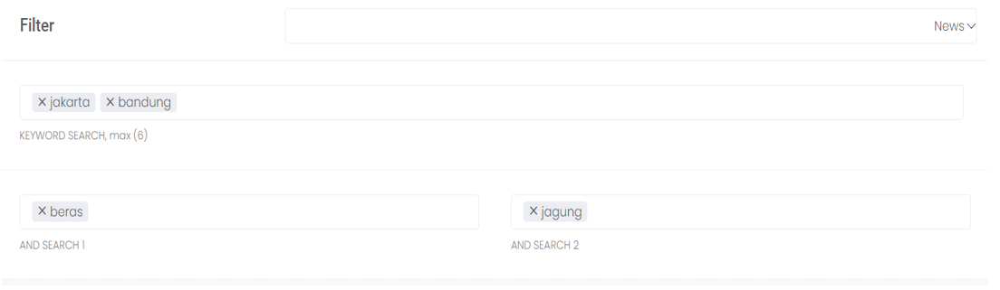
Date Range and Process
Ketika penentuan keyword telah dilakukan, selanjutnya menentukan range waktu pengambilan data dan klik button filter.
Summary
Tampilan hasil pengambilan data.
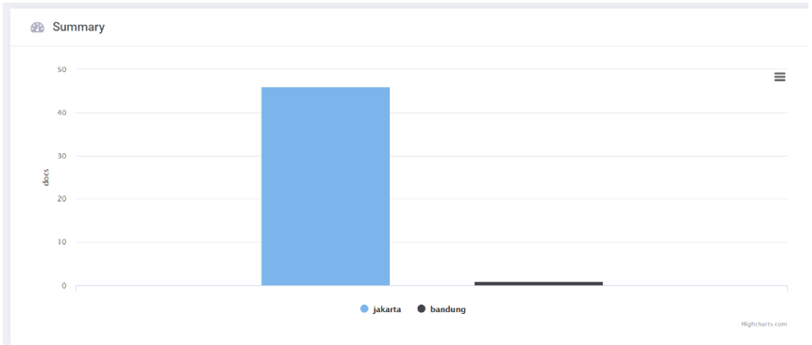
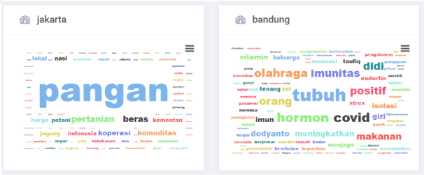
Sentiment
Melihat sentiment pada word cloud, dengan cara mengklik kata yang akan ditampilkan hasil sentiment.
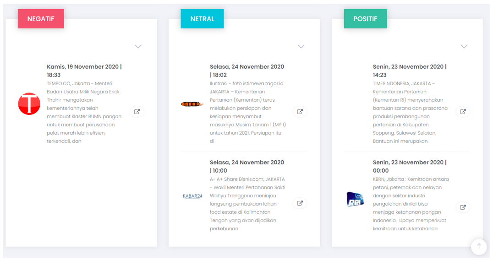
Menu Media Analytics
Filtering
- Sebelum melakukan pengambilan data pada datalake (BigLake), langkah pertama yang harus dilakukan yaitu menentukan filtering terkait data yang akan diambil.
- Menentukan keyword terlebih dahulu dengan cara mengisi form key search, and search 1 dan and search 2.
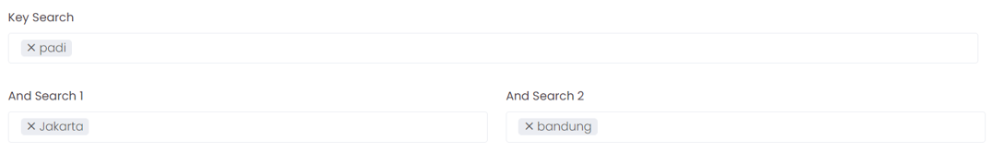
Date Range and Process
Ketika penentuan keyword telah dilakukan, selanjutnya menentukan range waktu pengambilan data dan klik button filter.
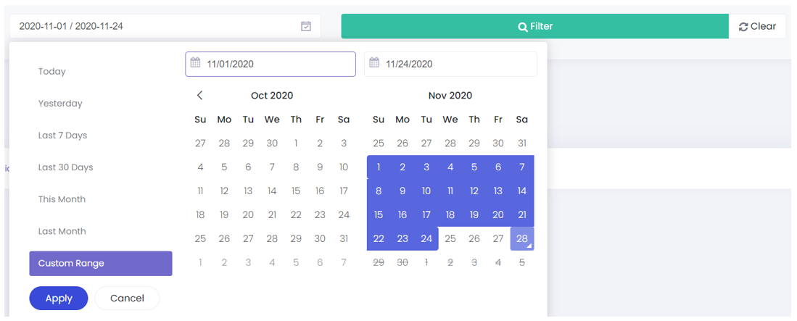
Summary
Tampilan hasil pengambilan data.
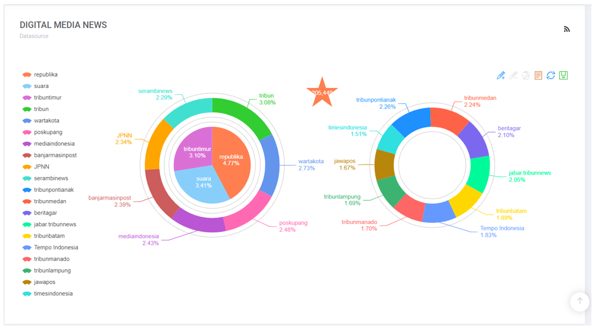
Menu News Discovery
Filtering
- Sebelum melakukan pengambilan data pada data lake (BigLake), langkah pertama yang harus dilakukan yaitu menentukan filtering terkait data yang akan diambil.
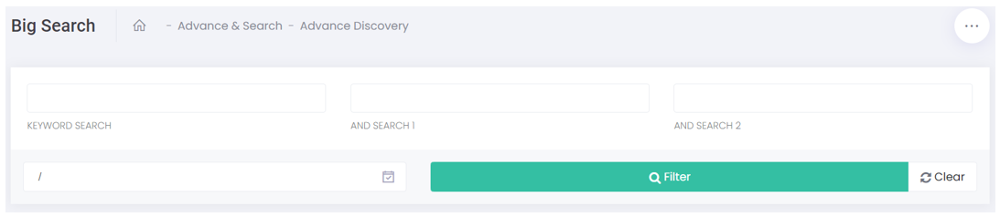
- Menentukan keyword terlebih dahulu dengan cara mengisinya pada form keyword search, and search 1 dan and search 2.
Date Range and Process
Ketika penentuan keyword telah dilakukan, selanjutnya menentukan range waktu pengambilan data dan klik button filter.
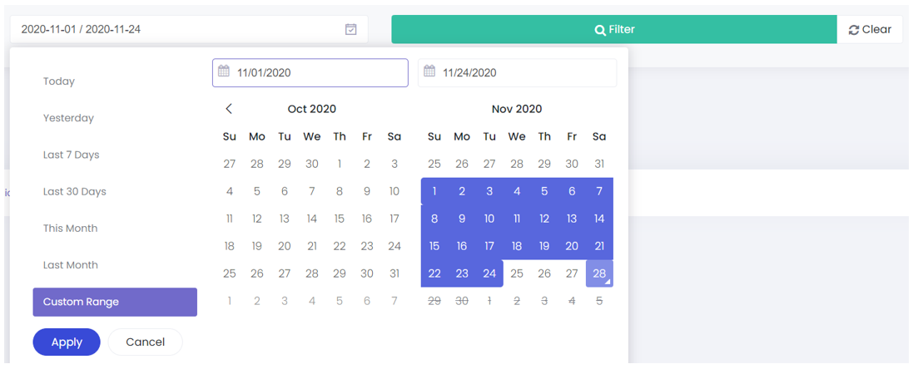
Summary
Tampilan hasil pengambilan data.
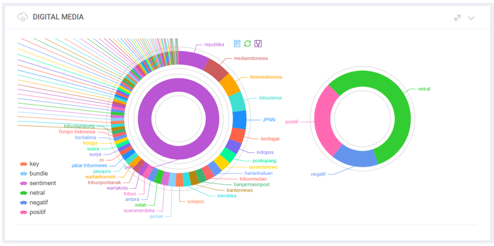
Menu Twitter Analytics
Filtering
- Sebelum melakukan pengambilan data pada data lake (BigLake), langkah pertama yang harus dilakukan yaitu menentukan filtering terkait data yang akan diambil.
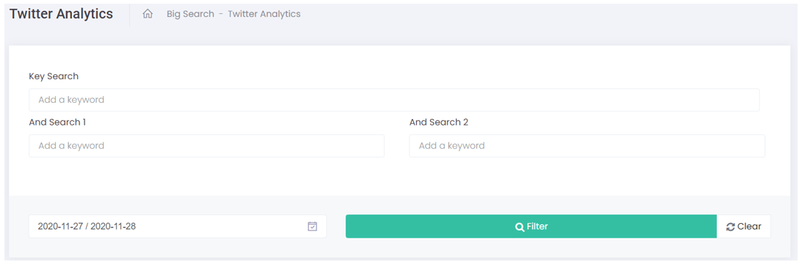
- Menentukan data yang akan diambil, dapat membuat keyword terlebih dahulu dengan cara mengisi form key search, and search 1 dan and search 2.
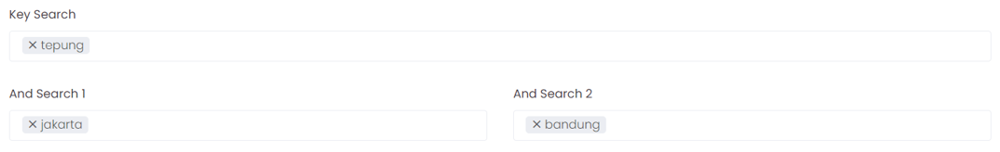
Date Range and Process
- Setelah penentuan keyword telah dilakukan, selanjutnya menentukan range waktu pengambilan data dan klik button filter.
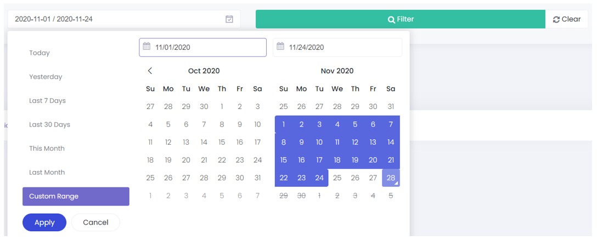
Summary
Tampilan hasil pengambilan data
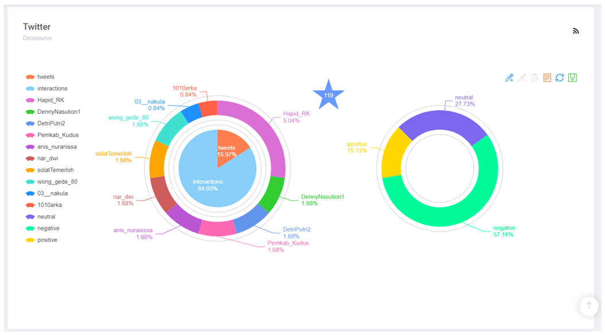
Menu People Profile
Filtering
- Sebelum melakukan pengambilan data pada data lake (BigLake), langkah pertama yang dilakukan yaitu menentukan filtering terkait data yang akan diambil.
- Menentukan filtering pada menu people profile,
- Form pertama : kata/keyword yang menjadi primary dalam pengambilan data
- Form kedua : pengecualian untuk kata yang ditentukan pada form pertama atau dengan kata lain form kedua sebagai kata/keyword tambahan exclude.
Sebagai contoh, kata/keyword untuk form pertama (pertanian). Sedangkan, form kedua (karantina). Data yang dicari/diambil adalah data yang mengandung kata pertanian tetapi tidak mengandung kata karantina.
Account Social Media
Ketika tahap filtering telah dilakukan dan kemudian proses pengambilan data berhasil, maka berikut tampilan pada pencarian account di social media.
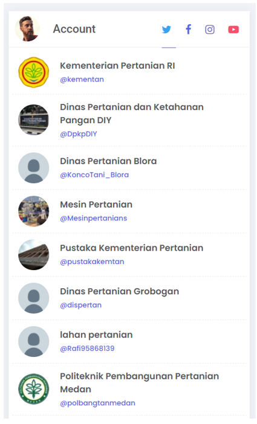
Content Social Media
Ketika tahap filtering telah dilakukan, kemudian proses pengambilan data berhasil maka berikut tampilan pada pencarian content di social media.
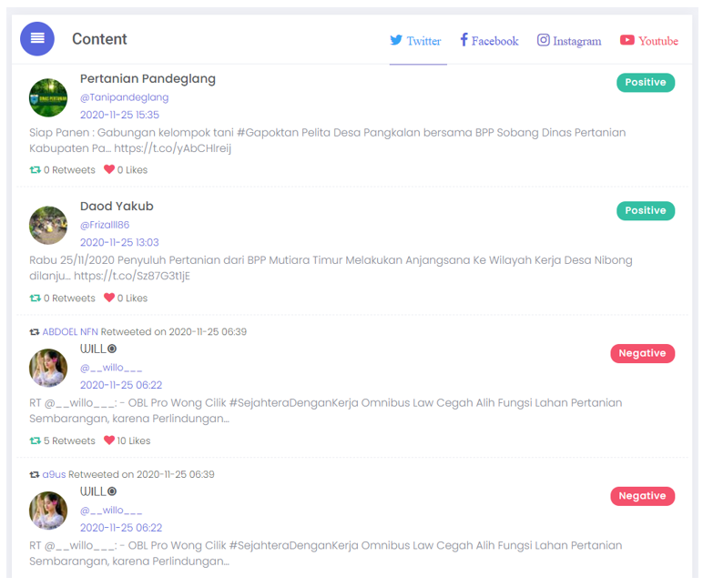
Account Digital Media
Ketika tahap filtering telah dilakukan, kemudian proses pengambilan data berhasil maka berikut tampilan pada pencarian content di digital media.
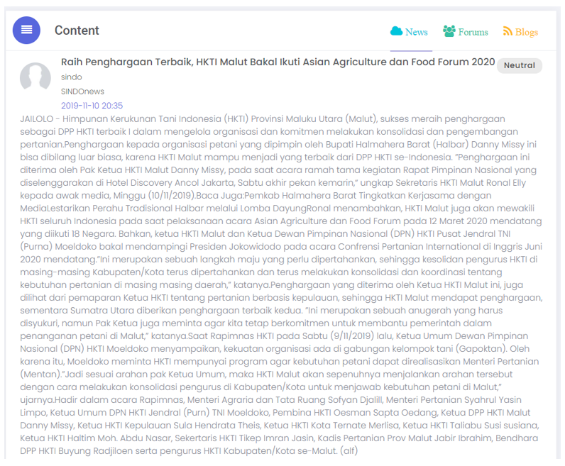